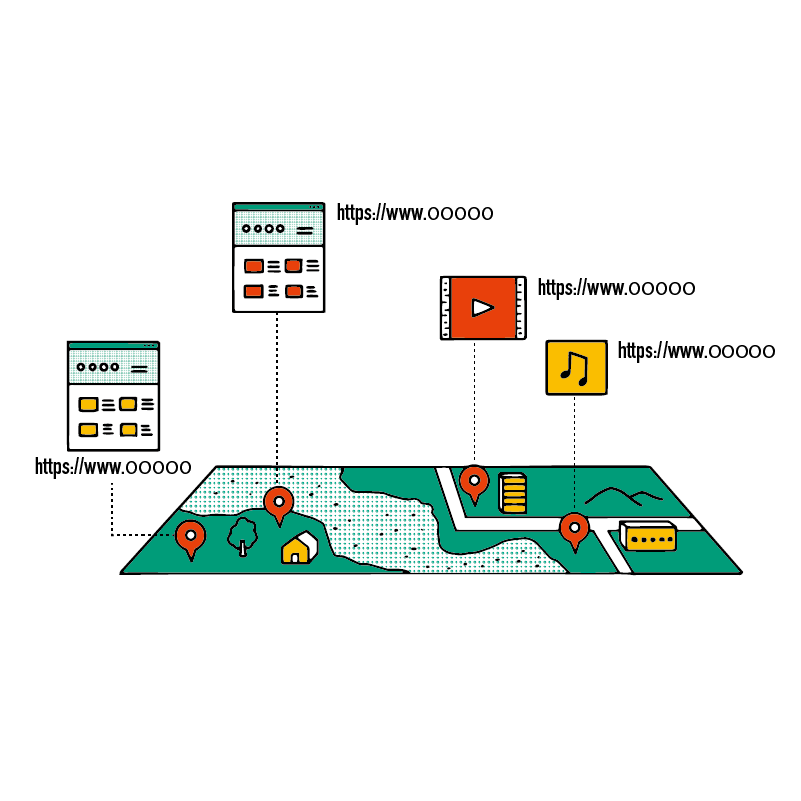
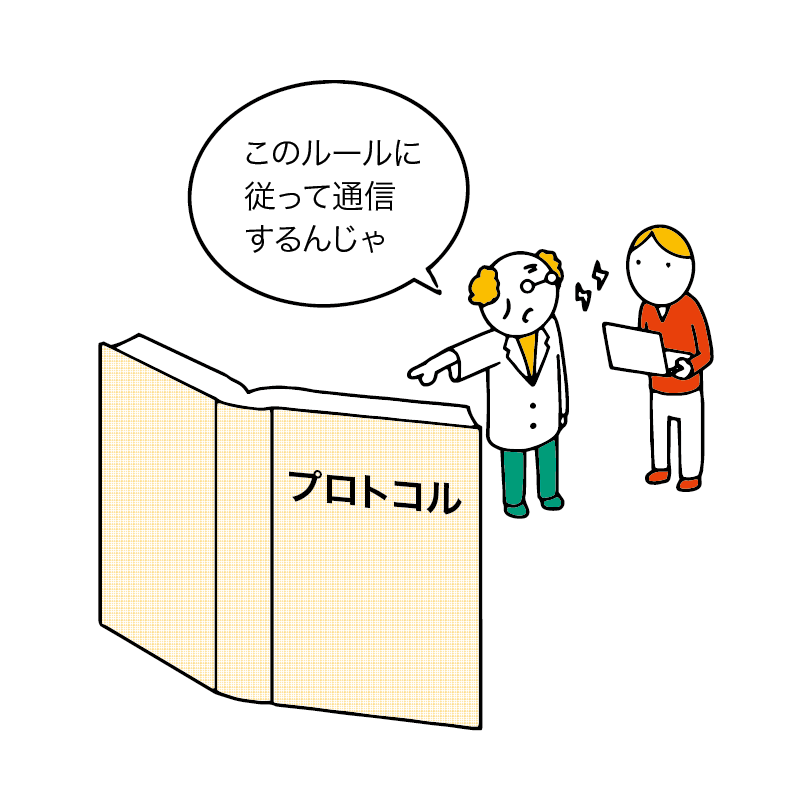
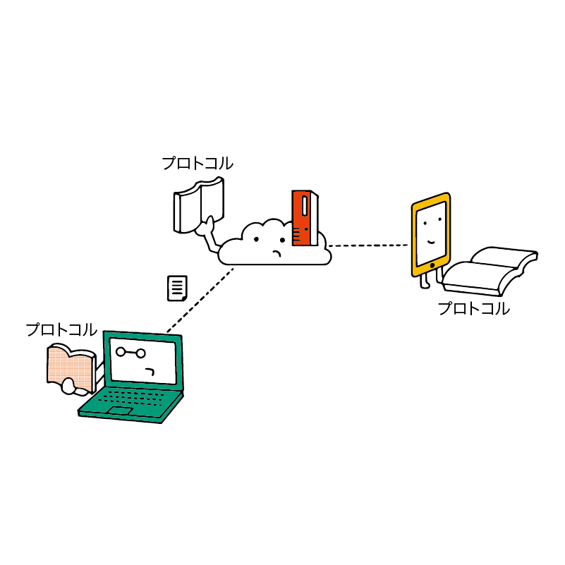
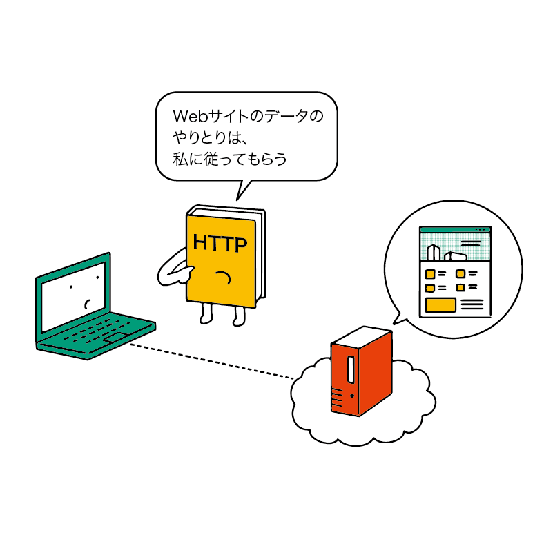
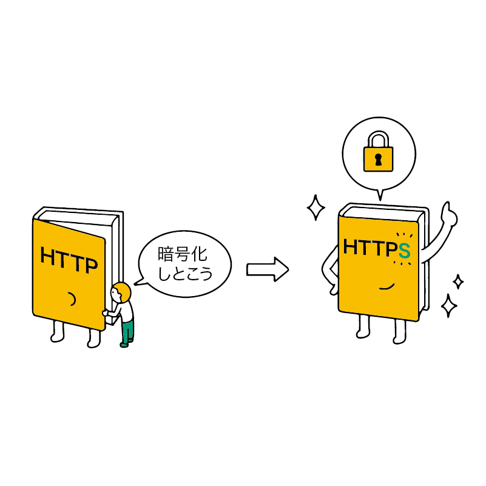
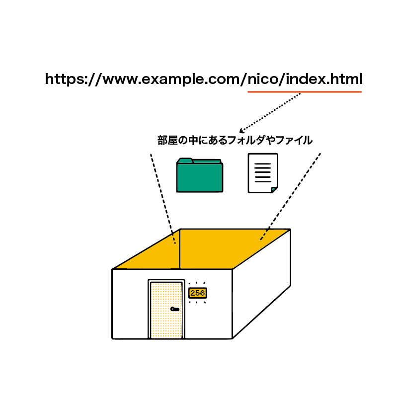

URLを見てみよう
URL（ユー・アール・エル）はネット上における Web サイトの住所です。
URL を共有することで、見ている Web サイトを瞬時に他の人に共有できます。
また、URL を見れば、不正な（悪意ある）サイトかどうかをある程度見抜ける場合もあります。
URLは Uniform Resource Locator（ユニフォーム・リソース・ロケーター）の略で、そのまま ユー・アール・エル と読むのが正しい読み方です。
時々、間違って「ウラル」と読まれることがありますが、これは正しい読み方ではありません。
また、アドレス と呼ばれることもあります。この呼び方は間違いではありませんが、パソコン用語には「メールアドレス」「IPアドレス」など、さまざまな「アドレス」が存在するため、 Webサイトのアドレスについては「URL」と呼ぶほうが間違われにくいでしょう。
URL の調べ方
いま見ている Web サイトの URL は、ブラウザの画面上部に表示されます。
パソコンからの場合
Chrome の場合、URL が画面上部に表示されています。
ただし、これは省略された URL です。
URL 表示部分をゆっくり 2 回クリックすると、https:// あるいは http:// から始まる、省略されていない URL が表示されます。
スマホからの場合
スマホのブラウザでもパソコンと同様に、画面上部に URL が表示されています。
パソコンに比べて表示できる画面が小さいため、更に短く省略されていることもあります。
なお、LINE や Instagram、Twitter などのアプリ内から URL を開いた場合は「アプリ内ブラウザ」で表示されていることがあります。
その場合は Safari で開く や Chrome で開く といったボタンを探して、Chrome や Safari といった通常のブラウザで開き直すことでパソコンと似たような操作が可能となります。
URL を共有する
パソコンの場合
ブラウザの URL 表示欄からコピー・アンド・ペーストすることで、URL を他の人に伝えられます。
Chrome では、 URL 表示欄を右クリックして コピー をクリックすると URL をコピーできます。ここでコピーした URL を SNS やメールなどにペーストすることで、URL を他の人に共有できます。
また、Web ページのリンクを右クリックして リンクのアドレスをコピー をクリックすることで、今表示しているページではなく、リンク先の URL をコピーすることもできます。
スマホの場合
スマホ（Android や iOS）でも URL を表示する部分を選択することで URL をコピーできます。また、共有 メニューから URL を SNS や LINE などに転送する事もできます。
スクリーンショットと違って受信した人もそのページへアクセスしやすくなるので、PC だけでなくスマホでも URL を使った共有を活用してみましょう。
スクリーンショットとの使い分け
スクリーンショットを使うと「あなたが見たままの状態」で画像として共有できます。
そのため、とても長い Web ページの一部分だけを切り抜いて相手に見せたいときなどには役立ちます。
一方で、長い Web ページ全体を相手に読んでほしい場合、1 枚のスクリーンショットには収まらないため、URL を使って共有する方がよいでしょう。
また、画像として見るだけではなく、相手にその Web ページにアクセスしてほしい場合は必ず URL を使いましょう。
LINE や SNS であればスクリーンショットを使った共有の方が便利な場面も多々あります。
ですが、仕事や学校のレポートなどでは URL を使って共有する機会のほうが多いため、両方の手段を知っておきましょう。
Web サーバーとは
URLについて詳しく見ていく前に、Web サーバー という概念について簡単に説明しておきます。
サーバー とは、何らかのサービスを利用者に提供するために設置されているコンピューターのことです。
その中でも Web サーバーとは、Web ページを利用者に向けて公開するときに使われるサーバーです。
Web サーバーは 24 時間 365 日起動しており、インターネットを経由して利用者からアクセスがあった場合、Web ページを利用者のパソコンやスマホに送ります。
たとえば、あなたが N 予備校のトップページにアクセスするとき、あなたのパソコンやスマホが N 予備校のサーバーに対して「Web ページを表示してほしい」と要求します。 サーバーはそれを受けて、N 予備校のトップページの内容をあなたのパソコンやスマホに送ります。
こういった流れで Web ページが表示されているのです。
URL の構造
URL は以下のような構造になっています。
- プロトコル名
- ホスト名（省略される場合あり）
- ドメイン名
- ディレクトリとファイル名など
なお、ブラウザの URL 表示部分では、省略表示されていることがあります。
たとえば Google のトップページの正式な URL は https://www.google.com/ ですが、Chrome はこれを google.com のように表示します。
ただし、URL をコピーした場合は正式な URL がコピーされるようになっています。
1. プロトコル名
プロトコルとは、通信の規格・取り決めのことです。
Web ページの場合、一般的には HTTP や HTTPS が使用されます。
Web ブラウザでは、よく使用されるのが HTTP あるいは HTTPS であるため、https://www.nicovideo.jp からプロトコル名を省略して www.nicovideo.jp と URL 欄に入力しても HTTP(HTTPS) が補完されるようになっています。
HTTP
HTTP（エイチ・ティ・ティ・ピー）は Hypertext Transfer Protocol（ハイパーテキスト・トランスファー・プロトコル）の略で、Web サイトのデータをやり取りする際に使われるプロトコルです。
HTTP で通信するサイトは暗号化されておらず、通信内容が他の誰かから盗聴されるリスクがあります。
Chrome では HTTP のサイトを表示すると 保護されていない通信 あるいは丸の中に小文字の i が描かれたアイコンが表示され、ここをクリックすることで詳細情報が表示されます。
また、iPhone や iPad で HTTP のサイトを表示すると 安全ではありません と表示されます。
これはサイトの内容が安全かどうかを示しているのではなく、通信方式が暗号化されているかどうか（HTTPかHTTPSか）を示しているだけです。
HTTPS
HTTPS（エイチ・ティ・ティ・ピー・エス）は、より安全に HTTP 通信をするためのプロトコルです。Sは「安全」を意味する Secure（セキュア）の略です。
HTTPS が使われている場合、SSL という仕組みを用いて HTTP の通信内容が暗号化され、他の誰かに盗聴されるリスクが低くなります。
以前はパスワードや個人情報、クレジットカード情報といった機密情報を入力するようなページだけで使用されていました。しかし、近年はすべてのページで HTTPS 通信を有効にする「常時SSL化」が Web サイト運営者に対して推奨されており、様々な Web サイトが HTTPS に対応するようになっています。
Chrome では HTTPS のサイトを表示すると鍵マークが表示され、ここをクリックすることで詳細情報が表示されます。
file
厳密にはプロトコルではありませんが、ネット上にあるサイトではなく、自分のパソコンの中にあるファイルをブラウザで閲覧すると file:///C:/filename.pdf のように file:///（ファイル） から始まる URL が表示されます。
この file:/// から始まる URL で表示されているものはあなたのパソコン専用のものです。これを他の人に送っても、他の人のパソコンで見ることはできないので要注意です。
要注意：「HTTPS なら安全」とは限らない
先程見たように、 HTTP のサイトは「保護されていない」「安全ではない」といった警告が表示されます。
逆に、HTTPS なら「安全」と言えるのでしょうか？
いいえ、HTTPS だから安全とは言い切れません。HTTPS は自分と Web サイトの間の通信を暗号化しているだけであり、暗号化した相手が安全であることを保証するものではありません。
確かに、通信内容が他者に盗聴されるリスクは減りますが、通信相手自体が不正なサイト（詐欺サイトなど）だった場合には情報の流出を防ぐことはできません。
昔は詐欺サイトが HTTPS を使うことは少なかったので、古い解説などでは「HTTPSであれば信頼してよい」と書いてあるものもあります。しかし、最近は詐欺サイトも HTTPS になっていることが多いため、安心することはできません。
2. ホスト名
まずは例として京都大学のサイトを見てみましょう。
京都大学全体の情報を示すサイトのURLは https://www.kyoto-u.ac.jp/ ですが、大学内の研究所や学部がそれぞれのサイトを持っています。いくつか例を見てみましょう。
- https://www.bun.kyoto-u.ac.jp/（文学部）
- https://law.kyoto-u.ac.jp/ （法学部）
- https://www.educ.kyoto-u.ac.jp/ （教育学部）
- https://www.cira.kyoto-u.ac.jp/ （iPS細胞研究所）
こう見ると、https:// と kyoto-u.ac.jp の間にある文字が違っていることが分かります。文学部は www.bun、法学部は law、教育学部は www.educ となっています。
これが ホスト名 です。
Web サイトのデータは「Web サーバー」と呼ばれるコンピューターの中に存在しており、私たちはインターネットを通してそれにアクセスしています。
しかし、1 つのサイトに 1 台のサーバーだけがあるわけではありません。先ほど見た大学のサイトのように、学部別にサーバーが分けられている場合もあります。会社や役所でも、部門などによってサーバーが分けられていることがあるでしょう。
このサーバーの名前がホスト名です（サーバーのことを ホストコンピューター ということがあります）。
なお、Web サイトや URL によってはホスト名が省略されているものもあります。
3. ドメイン名
ドメイン名は「これは誰の Web サイトなのか」を表すものです。
たとえば、niconico のドメインは nicovideo.jp で、N 高等学校 のドメインは nnn.ed.jp です。
ドメインは個人や企業などが料金を支払えば、原則として自由に取得できます。
ただし、「政府機関しか取得できないドメイン」や「日本に住んでいる人しか取得できないドメイン」などがあります。
ドメインを見れば、怪しいサイトなのか、信頼できるサイトなのか をある程度見抜けます。この見抜き方は第 8 章で学びます。
4. フォルダとファイル名など
Web サイトのデータが保管されている、Web サーバー上のフォルダとファイル名などです。
ただし、SNS や動画投稿サイトなど、「動的サイト」とよばれるサイトでは必ずしもこの部分がファイル名になっているとは限りません。